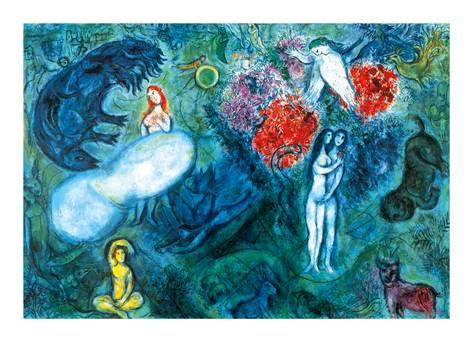

Marc Zakharovich Chagall (born Moishe Zakharovich Shagal; 6 July 1887 – 28 March 1985) was a Russian-French artist of Belarusian Jewish origin. An early modernist, he was associated with several major artistic styles and created works in virtually every artistic format, including painting, book illustrations, stained glass, stage sets, ceramic, tapestries and fine art prints.
"I chose painting because it was as necessary to me as food. It was to be a window we could fly in another world."-Marc Chagall